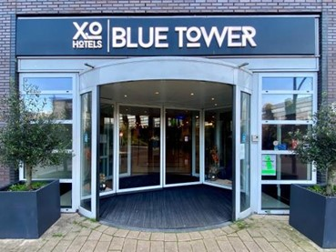

Plan putovanja Amsterdam:
DAN 1 - MUZEJ VAN GOGH-A
Muzej Van Goga čuva najveću kolekciju slika i crteža Vinsenta Van Goga na svetu. Iako muzej ne sadrži neka od Van Gogovih najpoznatijih dela (koja se nalaze u drugim muzejima širom sveta), vredi videti izložbu umetnikovih ranih radova, uključujući remek-dela poput “Suncokreti” i “Cvat badema”. Ovaj muzej je jedan od najposećenijih ne samo u Amsterdamu, već i u čitavoj Holandiji. Posetioci dolaze iz raznih delova sveta kako bi videli dela ovog umetnika koji je patio od mentalnih problema i na kraju izvršio samoubistvo.
DAN 2 - KUĆA ANE FRANK
Ana Frank bila je jevrejska devojčica koja se sakrila nakon što su nacisti iz Nemačke invazirali Holandiju i počeli prinudno prevoziti holandske Jevreje u koncentracione logore. Danas je kuća muzej, a posetioci mogu zamisliti kako je bilo skrivati se od nacista više od dve godine, samo da bi bili izdani i odvedeni u koncentracioni logor. Predmeti u muzeju uključuju istorijske dokumente, fotografije, filmske snimke i stvari iz skrovišta i onih koji su im pomagali. Originalni dnevnik i druge beleške Ane Frank takođe su izloženi, iako originalni predmeti iz aneksa nisu izloženi, jer je bio opljačkan tokom Drugog svetskog rata.
DAN 3 - JOHAN CRUYFF ARENA
Arena Johan Krojf je glavni stadion glavnog grada Holandije, Amsterdama i domaći stadion fudbalskog kluba AFC Ajax. Građen od 1993. do 1996. godine po ceni od 140 miliona evra, najveći je stadion u zemlji sa kapacitetom od 56.120 mesta. Stadion je ranije bio poznat kao Amsterdam Arena do fudbalske sezone 2018–19, kada je zvanično preimenovan u čast holandskog fudbalera Johana Krojfa koji je preminuo 2016. godine. Bio je to jedan od stadiona koji se koristio tokom Evropskog fudbalskog prvenstva 2000. godine, a na njemu je su odigrani i finale UEFA Lige šampiona 1998. i finale UEFA Lige Evrope 2013. godine. Stadion je takođe bio domaćin tri utakmice grupne faze i jednog meča osmine finala UEFA Eura 2020.
REZERVACIJA PUTOVANJA

Avio aranžman:
Autobus aranžman:
Izvršite rezervaciju